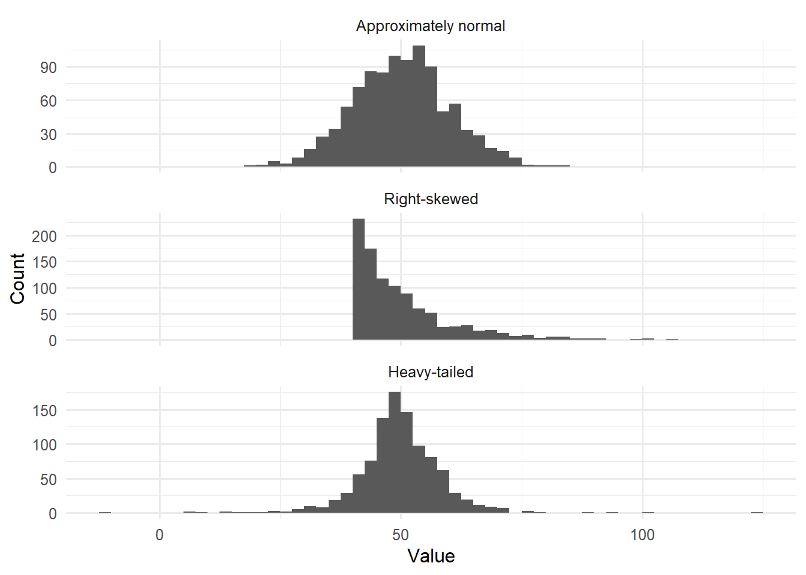
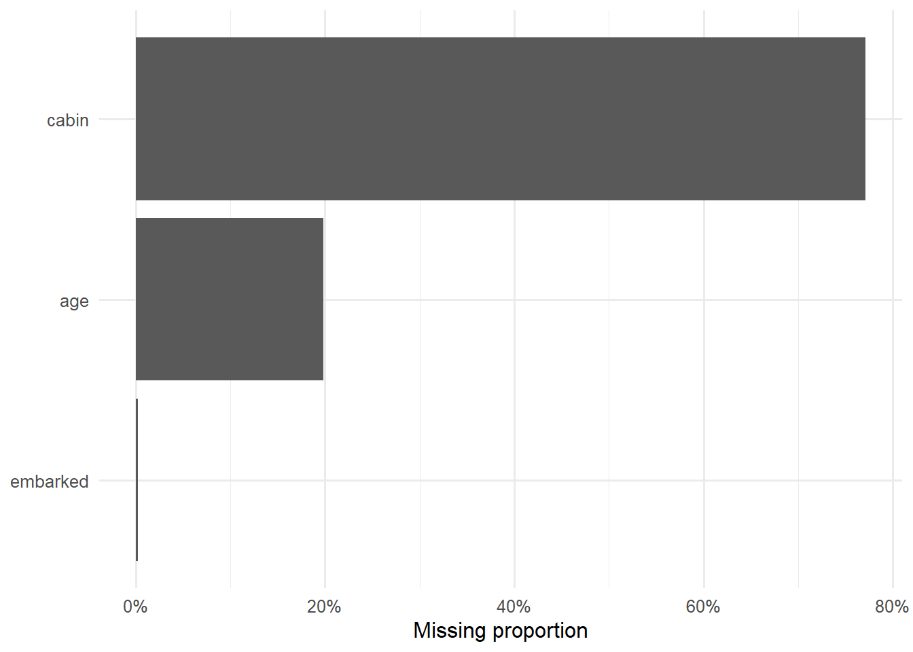
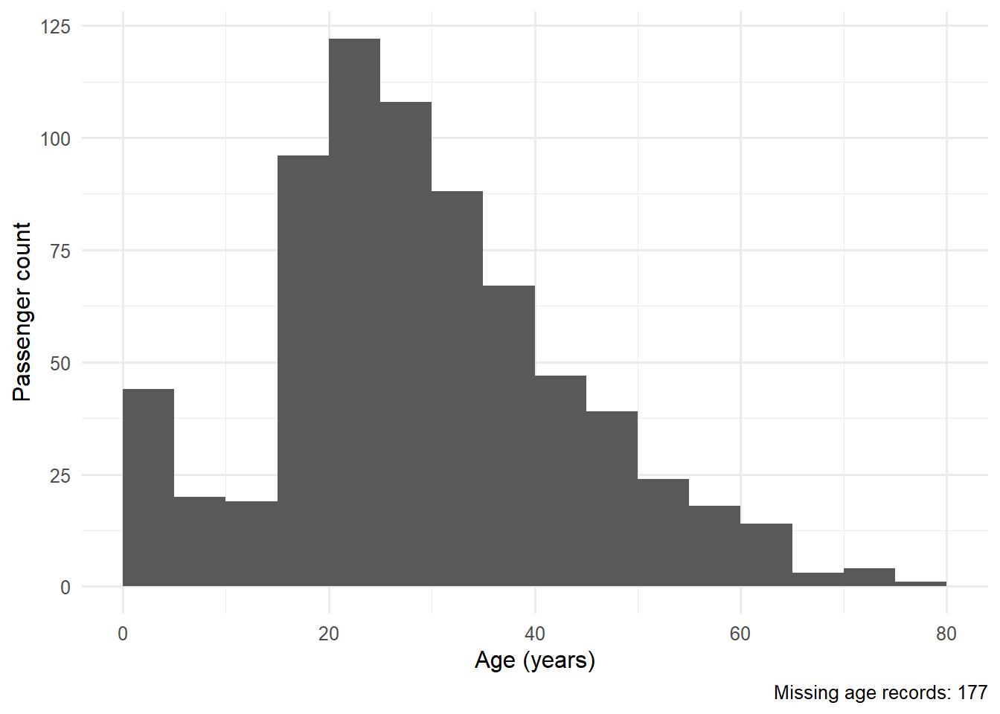
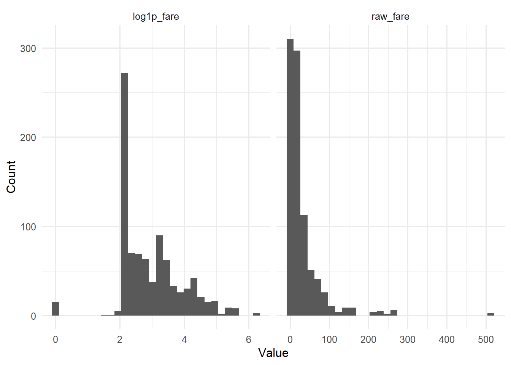
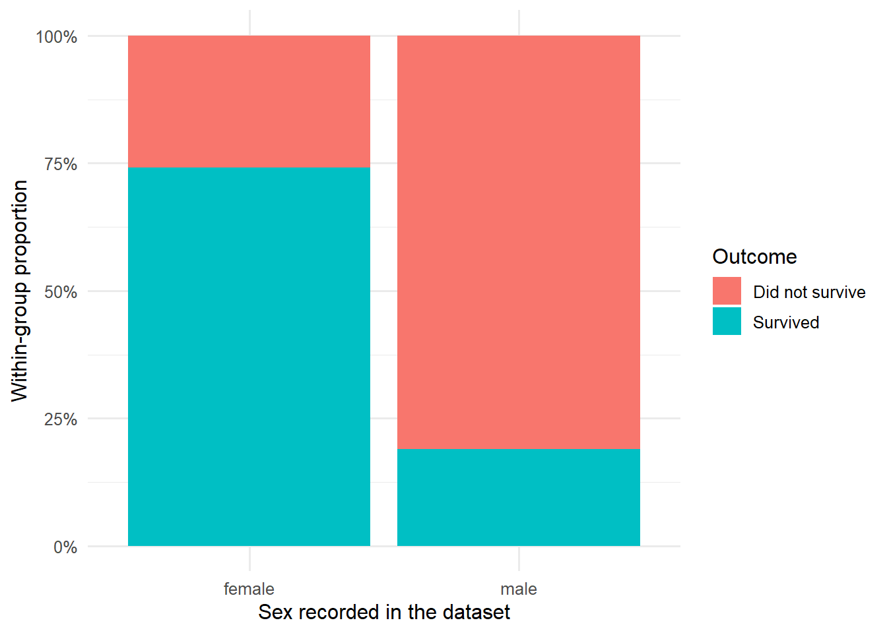
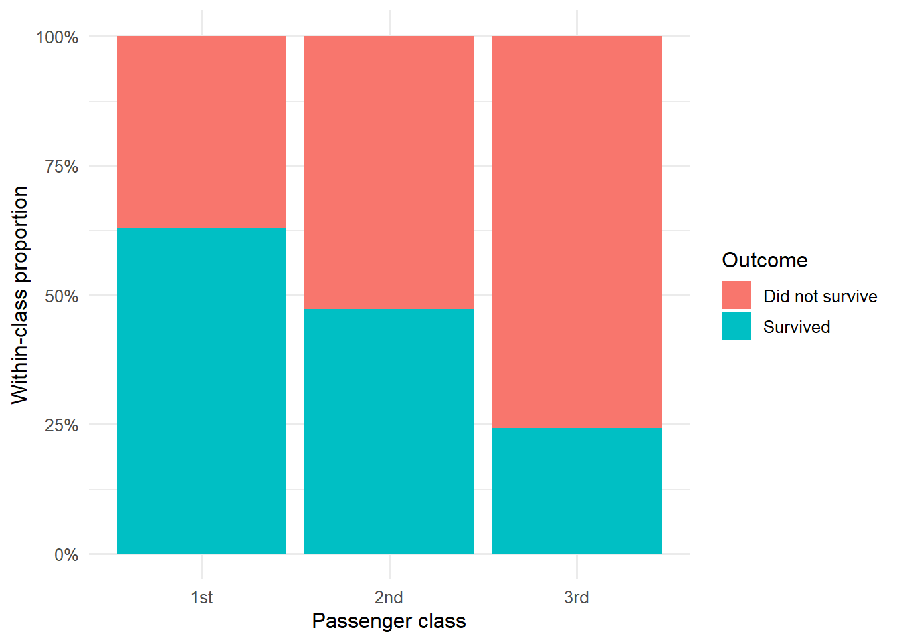
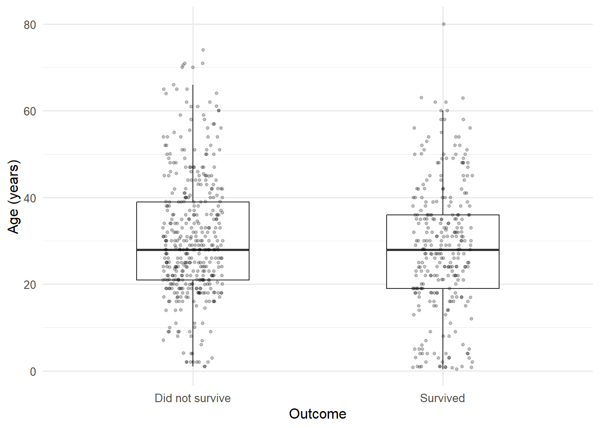
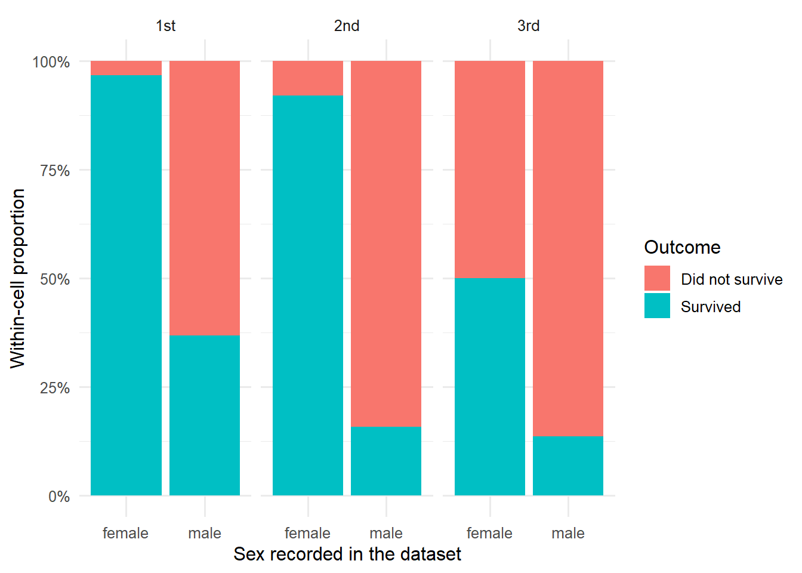

flowchart LR
A["Question<br>무엇을 알고 싶은가?"] --> B["Unit and Key<br>한 행과 식별자"]
B --> C["Data Quality<br>결측·중복·범위"]
C --> D["Describe<br>중심·산포·형태"]
D --> E["Explore<br>관계·집단·맥락"]
E --> F["Sensitivity<br>선택에 따른 변화"]
F --> G["Claim<br>근거·한계·다음 단계"]
기술통계와 탐색적 데이터 분석
숫자와 그래프로 데이터의 구조·품질·패턴을 검증하기
6주차 학습목표
Note
이번 주 학습을 마치면 다음을 할 수 있어야 합니다.
- 기술통계와 추론통계의 역할을 구분한다.
- 변수의 유형과 분포에 맞춰 평균, 중앙값, 비율, 표준편차, IQR 등의 요약값을 선택한다.
- 평균과 표준편차만으로는 드러나지 않는 분포의 비대칭성, 꼬리, 이상값을 그래프로 확인한다.
- EDA를 관측단위와 key 확인 → 데이터 품질 감사 → 단변량 → 이변량·다변량 → 민감도 점검 → 주장 범위 설정의 과정으로 수행한다.
- 결측값과 이상값을 무조건 제거·대체하지 않고 그 의미와 생성과정을 먼저 질문한다.
- 범주별 count와 proportion의 분모를 명시하고, 반복측정이나 군집 구조를 독립 표본처럼 보고하지 않는다.
- EDA 결과에서 관찰, 해석, 대안 설명, 다음 분석을 구분한다.
- ChatGPT와 같은 GenAI를 자동 분석기보다 EDA 계획 비평가, 코드 감사자, 주장 검토자로 활용한다.
오늘의 핵심 질문
이 요약값과 그래프는 데이터의 어떤 측면을 드러내고, 무엇을 숨기고 있을까?
Important
EDA는 “흥미로운 그래프를 많이 그리는 일”이 아닙니다. 데이터가 어떻게 만들어졌는지 이해하고, 분석에 들어가기 전에 오류·편향·예외·대안 설명을 발견하는 반복적 진단 과정입니다.
지난주와 연결하기
지난주에는 연구질문을 ggplot2로 시각적 증거로 바꾸었습니다. 이번 주에는 그래프에서 보이는 패턴을 수치로 요약하고, 두 증거가 서로 일치하는지 확인합니다.
| 시각적 질문 | 함께 확인할 기술통계 |
|---|---|
| 분포의 중심은 어디인가? | 평균, 중앙값, 최빈 범주 |
| 값들이 얼마나 퍼져 있는가? | 표준편차, IQR, MAD, 범위 |
| 분포가 한쪽으로 치우쳤는가? | 평균–중앙값 차이, 분위수, 왜도 |
| 집단 간 차이가 보이는가? | 집단별 n, 중심, 산포, 비율 |
| 일부 값이 패턴을 지배하는가? | 최대·최소, 상위 분위수, 이상값 감사 |
| 결측 때문에 결과가 달라지는가? | 결측 수·비율, 완전사례와 민감도 비교 |
숫자는 그래프를 대체하지 않고, 그래프도 숫자를 대체하지 않습니다. 둘은 서로 다른 방식으로 같은 주장을 감사합니다.
이번 주의 GenAI 활용 방식
이번 주에도 다음 순서를 유지합니다.
Attempt → Ask → Test → Audit → Explain
| 단계 | 학생이 먼저 할 일 | GenAI에 맡길 수 있는 일 |
|---|---|---|
| Attempt | 관측단위, key, 질문, 예상 위험을 적는다. | 아직 사용하지 않는다. |
| Ask | 변수 설명과 자신의 EDA 계획을 제공한다. | 빠진 품질 점검이나 대안 요약값을 제안한다. |
| Test | 제안된 코드를 직접 실행하고 원자료와 대조한다. | 실제로 보지 못한 출력값을 추측하지 않게 한다. |
| Audit | 결측·이상값·분모·집단 크기·민감도를 확인한다. | reviewer처럼 과도한 결정과 해석을 공격하게 한다. |
| Explain | 채택·수정·기각 이유와 주장 범위를 기록한다. | 문장의 인과적 비약과 누락된 대안 설명을 지적하게 한다. |
EDA 계획을 먼저 검토받는 프롬프트
당신은 HCI 데이터 분석 수업의 EDA reviewer다.
아래에는 연구질문, 관측단위, 변수 설명, 내가 세운 EDA 계획이 있다.
완성 코드를 작성하지 말고 다음을 검토하라.
1. 관측단위와 분석단위가 혼동되어 있는가?
2. 확인하지 않은 key, 중복, 결측, 허용 범위가 있는가?
3. 변수 유형에 맞지 않는 요약통계를 사용했는가?
4. 단변량 → 이변량 → 다변량 탐색의 순서에서 빠진 단계가 있는가?
5. 현재 EDA로 가능한 주장과 불가능한 주장을 구분하라.
내가 먼저 답해야 할 질문을 최대 5개 제시하라.
출력값이나 분석 결과를 보지 못했다면 추측하지 말라.
연구자료를 그대로 업로드하지 않기
실제 IRB 자료, 참여자 ID, 대화 로그, 위치·건강·생체 정보, 비공개 기업 자료를 공개형 GenAI에 입력하지 않습니다. 다음으로도 충분히 도움을 받을 수 있습니다.
- 비식별·합성 예시 행
glimpse()와summary()출력- 변수 사전과 허용 범위
- 결측 개수와 집단별 표본 수
- 최소 재현 코드와 오류 메시지
- 자신이 먼저 작성한 해석 문장
준비
library(tidyverse)
theme_set(theme_minimal(base_size = 12))
Tip
이번 자료의 Titanic 실습은 titanic 패키지를 사용합니다. 패키지가 없다면 Console에서 한 번만 다음을 실행합니다.
install.packages("titanic")강의자료 코드 청크 안에서 매번 패키지를 설치하지 않습니다.
Part I. 기술통계: 분포를 압축하되 지워 버리지 않기
기술통계와 추론통계
- 기술통계(descriptive statistics): 현재 관측한 데이터의 중심, 산포, 형태, 빈도를 요약합니다.
- 추론통계(inferential statistics): 표본에서 모집단이나 데이터 생성과정에 대해 불확실성을 포함한 결론을 내립니다.
기술통계만으로도 중요한 질문에 답할 수 있지만, 다음은 자동으로 보장되지 않습니다.
- 표본 밖 모집단에서도 같은 패턴이 나타나는가?
- 두 집단의 차이가 우연보다 큰가?
- 한 변수가 다른 변수의 원인인가?
- 결측·표집·측정오차를 고려해도 결과가 유지되는가?
Important
“평균이 다르다”는 현재 표본의 기술입니다. “모집단에서도 효과가 있다”는 추론이며, “X가 Y를 변화시켰다”는 인과 주장입니다. 세 문장을 구분해야 합니다.
같은 중심, 다른 분포
평균이 비슷한 세 분포를 만들어 보겠습니다.
set.seed(2026)
n_demo <- 1000
distribution_demo <- bind_rows(
tibble(
distribution = "Approximately normal",
value = rnorm(n_demo, mean = 50, sd = 10)
),
tibble(
distribution = "Right-skewed",
value = 40 + rexp(n_demo, rate = 0.1)
),
tibble(
distribution = "Heavy-tailed",
value = 50 + rt(n_demo, df = 3) * (10 / sqrt(3))
)
) |>
mutate(
distribution = factor(
distribution,
levels = c("Approximately normal", "Right-skewed", "Heavy-tailed")
)
) distribution_demo |>
ggplot(aes(x = value)) +
geom_histogram(binwidth = 2.5, boundary = 0) +
facet_wrap(vars(distribution), ncol = 1, scales = "free_y") +
labs(
x = "Value",
y = "Count"
)
distribution_demo |>
summarise(
n = n(),
mean = mean(value),
median = median(value),
sd = sd(value),
iqr = IQR(value),
minimum = min(value),
maximum = max(value),
.by = distribution
) |>
mutate(across(where(is.numeric), ~ round(.x, 2)))# A tibble: 3 × 8
distribution n mean median sd iqr minimum maximum
<fct> <dbl> <dbl> <dbl> <dbl> <dbl> <dbl> <dbl>
1 Approximately normal 1000 50.1 50.2 9.9 13 19.5 84.2
2 Right-skewed 1000 50.2 46.9 10.3 10.8 40 107.
3 Heavy-tailed 1000 49.8 49.6 9.08 8.68 -11.0 125. 확인할 질문
- 평균이 비슷하면 세 분포가 비슷하다고 말할 수 있는가?
- 어느 분포에서 평균과 중앙값의 차이가 큰가?
- 표준편차와 IQR이 서로 다른 이야기를 하는 분포는 무엇인가?
- 최대값 하나가 분포 설명에 얼마나 큰 영향을 주는가?
중심경향: “대표값”은 질문에 따라 달라진다
Mean
\[ \bar{x}=\frac{1}{n}\sum_{i=1}^{n}x_i \]
- 모든 값을 사용합니다.
- 더하고 나누는 것이 의미 있는 수치형 변수에 적합합니다.
- 극단값과 비대칭 분포의 영향을 크게 받을 수 있습니다.
Median
- 정렬했을 때 가운데에 있는 값입니다.
- 순서가 의미 있는 자료에 사용할 수 있습니다.
- 극단값에 상대적으로 강건합니다.
- “전형적인 관측”을 설명할 때 평균보다 적절할 수 있습니다.
Trimmed mean
양쪽 꼬리의 일정 비율을 제외한 뒤 계산한 평균입니다. 평균의 해석 가능성과 극단값에 대한 강건성을 절충합니다.
distribution_demo |>
summarise(
mean = mean(value),
trimmed_mean_10pct = mean(value, trim = 0.10),
median = median(value),
.by = distribution
) |>
mutate(across(where(is.numeric), ~ round(.x, 2)))# A tibble: 3 × 4
distribution mean trimmed_mean_10pct median
<fct> <dbl> <dbl> <dbl>
1 Approximately normal 50.1 50.1 50.2
2 Right-skewed 50.2 48.4 46.9
3 Heavy-tailed 49.8 49.9 49.6Mode
최빈값은 가장 자주 나타나는 값입니다. 특히 범주형 변수에서 유용합니다.
statistical_mode <- function(x) {
x <- x[!is.na(x)]
counts <- table(x)
names(counts)[counts == max(counts)]
}
interface_choices <- c(
"voice", "text", "voice", "voice",
"text", "touch", "voice", NA
)
statistical_mode(interface_choices)[1] "voice"
Warning
R의 mode() 함수는 통계적 최빈값이 아니라 객체의 저장 방식과 관련된 정보를 반환합니다. 또한 연속형 자료에서는 정확히 같은 값이 반복되지 않을 수 있으므로 “표본에서 가장 자주 나온 실수값”은 대개 안정적인 요약이 아닙니다. 히스토그램의 봉우리와 통계적 mode도 같은 개념이 아닐 수 있습니다.
어떤 중심을 보고할까?
| 자료와 목적 | 우선 고려할 요약 |
|---|---|
| 대칭적인 연속형 자료 | mean과 SD |
| 강하게 치우친 시간·비용 자료 | median과 IQR, 필요하면 mean도 병기 |
| 순서형 단일 문항 | 빈도·비율, median과 분위수 |
| 명목형 범주 | count, proportion, mode |
| 여러 문항의 합성척도 | 척도 구성 근거를 확인한 뒤 mean·SD 또는 median·IQR |
| 극단값이 중요한 안전 자료 | 중심만이 아니라 최대값·상위 분위수·개별 사례도 확인 |
산포: 같은 평균 안에 얼마나 다른 관측이 있는가
Range
\[ \text{Range}=\max(x)-\min(x) \]
직관적이지만 두 개의 값에만 의존하므로 극단값에 매우 민감합니다.
Sample variance와 standard deviation
R의 var()와 sd()는 기본적으로 표본분산과 표본표준편차를 계산합니다.
\[ s^2=\frac{1}{n-1}\sum_{i=1}^{n}(x_i-\bar{x})^2 \]
\[ s=\sqrt{s^2} \]
- 분산은 편차를 제곱하므로 원래 단위의 제곱입니다.
- 표준편차는 원래 변수와 같은 단위라 해석하기 쉽습니다.
- 두 값 모두 평균과 마찬가지로 극단값의 영향을 받습니다.
IQR과 MAD
\[ IQR=Q_{0.75}-Q_{0.25} \]
- IQR은 가운데 50%가 차지하는 범위입니다.
- MAD는 중앙값으로부터의 절대편차를 활용하는 강건한 산포 측도입니다.
distribution_demo |>
summarise(
range = diff(range(value)),
variance = var(value),
sd = sd(value),
iqr = IQR(value),
mad = mad(value),
.by = distribution
) |>
mutate(across(where(is.numeric), ~ round(.x, 2)))# A tibble: 3 × 6
distribution range variance sd iqr mad
<fct> <dbl> <dbl> <dbl> <dbl> <dbl>
1 Approximately normal 64.6 98.0 9.9 13 9.82
2 Right-skewed 66.8 107. 10.3 10.8 7.2
3 Heavy-tailed 136. 82.5 9.08 8.68 6.4 분위수는 분포의 위치를 직접 보여 준다
distribution_demo |>
reframe(
probability = c(0, .10, .25, .50, .75, .90, 1),
quantile = quantile(
value,
probs = c(0, .10, .25, .50, .75, .90, 1)
),
.by = distribution
) |>
mutate(quantile = round(quantile, 2))# A tibble: 21 × 3
distribution probability quantile
<fct> <dbl> <dbl>
1 Approximately normal 0 19.5
2 Approximately normal 0.1 37.8
3 Approximately normal 0.25 43.2
4 Approximately normal 0.5 50.2
5 Approximately normal 0.75 56.2
6 Approximately normal 0.9 63.0
7 Approximately normal 1 84.2
8 Right-skewed 0 40
9 Right-skewed 0.1 40.9
10 Right-skewed 0.25 42.8
# ℹ 11 more rows이상값 하나가 요약값을 바꾸는 방식
regular_values <- c(42, 45, 47, 49, 50, 52, 54, 55, 57, 59)
with_extreme <- c(regular_values, 250)
compare_outlier <- tibble(
version = c("Without extreme value", "With extreme value"),
values = list(regular_values, with_extreme)
) |>
mutate(
mean = map_dbl(values, mean),
median = map_dbl(values, median),
sd = map_dbl(values, sd),
iqr = map_dbl(values, IQR)
) |>
select(-values)
compare_outlier# A tibble: 2 × 5
version mean median sd iqr
<chr> <dbl> <dbl> <dbl> <dbl>
1 Without extreme value 51 51 5.42 7.25
2 With extreme value 69.1 52 60.2 8
Important
이상값은 자동 삭제 대상이 아닙니다. 다음 중 무엇인지 먼저 판단합니다.
- 입력·측정 오류
- 단위 또는 코딩 불일치
- 다른 모집단에서 온 관측
- 드물지만 실제로 가능한 사례
- 연구 질문에서 가장 중요한 안전·실패 사례
삭제·winsorizing·변환을 선택했다면 원자료 결과와 함께 민감도 분석을 보고하는 것이 좋습니다.
분포의 형태: 왜도와 첨도
Skewness
왜도는 분포의 비대칭성을 요약합니다.
- 양의 왜도: 오른쪽 꼬리가 상대적으로 김
- 음의 왜도: 왼쪽 꼬리가 상대적으로 김
- 0 근처: 대칭에 가깝지만 반드시 정규분포라는 뜻은 아님
Excess kurtosis
초과첨도는 정규분포를 기준으로 꼬리와 극단값의 정도를 요약하는 한 방식입니다.
- 양수: 정규분포보다 두꺼운 꼬리가 나타날 수 있음
- 음수: 정규분포보다 가벼운 꼬리가 나타날 수 있음
- 0 근처: 정규분포와 같은 첨도 기준이지만, 전체 모양이 정규분포라는 보장은 없음
패키지마다 보정과 “kurtosis” 대 “excess kurtosis” 정의가 다를 수 있으므로 사용한 정의를 명시해야 합니다.
sample_skewness <- function(x) {
x <- x[is.finite(x)]
n <- length(x)
if (n < 3 || sd(x) == 0) {
return(NA_real_)
}
z <- (x - mean(x)) / sd(x)
n / ((n - 1) * (n - 2)) * sum(z^3)
}
sample_excess_kurtosis <- function(x) {
x <- x[is.finite(x)]
n <- length(x)
if (n < 4 || sd(x) == 0) {
return(NA_real_)
}
z <- (x - mean(x)) / sd(x)
n * (n + 1) / ((n - 1) * (n - 2) * (n - 3)) * sum(z^4) -
3 * (n - 1)^2 / ((n - 2) * (n - 3))
}distribution_demo |>
summarise(
skewness = sample_skewness(value),
excess_kurtosis = sample_excess_kurtosis(value),
.by = distribution
) |>
mutate(across(where(is.numeric), ~ round(.x, 2)))# A tibble: 3 × 3
distribution skewness excess_kurtosis
<fct> <dbl> <dbl>
1 Approximately normal 0.06 0.04
2 Right-skewed 1.83 4
3 Heavy-tailed 0.14 9.98
Warning
왜도와 첨도를 하나의 임계값으로 판정해 “정규성 통과/실패”라고 결론 내리지 않습니다. 표본 크기, 히스토그램, ECDF, Q–Q plot, 측정범위, 분석모형의 잔차를 함께 봐야 합니다. 원자료의 비정규성과 모형 잔차의 비정규성도 구분합니다.
한 번에 요약하되, 변수의 의미는 잃지 않기
수치형 열 전체를 빠르게 감사하기
distribution_demo |>
summarise(
across(
where(is.numeric),
list(
n = ~ sum(!is.na(.x)),
missing = ~ sum(is.na(.x)),
mean = ~ mean(.x, na.rm = TRUE),
median = ~ median(.x, na.rm = TRUE),
sd = ~ sd(.x, na.rm = TRUE),
iqr = ~ IQR(.x, na.rm = TRUE)
)
)
)# A tibble: 1 × 6
value_n value_missing value_mean value_median value_sd value_iqr
<int> <int> <dbl> <dbl> <dbl> <dbl>
1 3000 0 50.0 49.0 9.78 11.3이 방식은 빠른 감사에는 유용하지만, 모든 수치형 열에 같은 요약이 개념적으로 적절한 것은 아닙니다. 숫자로 저장된 참여자 ID, 실험조건 코드, Likert 단일문항에 평균과 SD를 자동 적용해서는 안 됩니다.
긴 형태의 재사용 가능한 요약표
summary_long <- distribution_demo |>
summarise(
n = sum(!is.na(value)),
missing = sum(is.na(value)),
mean = mean(value, na.rm = TRUE),
median = median(value, na.rm = TRUE),
sd = sd(value, na.rm = TRUE),
iqr = IQR(value, na.rm = TRUE),
q10 = quantile(value, .10, na.rm = TRUE),
q90 = quantile(value, .90, na.rm = TRUE),
.by = distribution
) |>
pivot_longer(
cols = -distribution,
names_to = "statistic",
values_to = "value"
)
summary_long# A tibble: 24 × 3
distribution statistic value
<fct> <chr> <dbl>
1 Approximately normal n 1000
2 Approximately normal missing 0
3 Approximately normal mean 50.1
4 Approximately normal median 50.1
5 Approximately normal sd 9.90
6 Approximately normal iqr 13.0
7 Approximately normal q10 37.9
8 Approximately normal q90 63.0
9 Right-skewed n 1000
10 Right-skewed missing 0
# ℹ 14 more rowsHCI 자료에서는 행 수와 참여자 수를 구분한다
로그와 반복측정 자료에서는 참여자마다 관측 횟수가 다를 수 있습니다.
hci_unbalanced <- tribble(
~participant_id, ~condition, ~trust,
"P01", "voice", 2,
"P01", "voice", 3,
"P01", "voice", 2,
"P01", "voice", 3,
"P01", "voice", 2,
"P02", "voice", 6,
"P03", "voice", 7
)
hci_unbalanced |>
summarise(
rows = n(),
participants = n_distinct(participant_id)
)# A tibble: 1 × 2
rows participants
<int> <int>
1 7 3시행을 같은 가중치로 평균하면 관측이 많은 참여자가 더 큰 영향을 줍니다.
trial_weighted_mean <- hci_unbalanced |>
summarise(mean_trust = mean(trust))
participant_weighted_mean <- hci_unbalanced |>
summarise(
participant_mean = mean(trust),
.by = participant_id
) |>
summarise(mean_trust = mean(participant_mean))
bind_rows(
`Each trial weighted equally` = trial_weighted_mean,
`Each participant weighted equally` = participant_weighted_mean,
.id = "estimand"
)# A tibble: 2 × 2
estimand mean_trust
<chr> <dbl>
1 Each trial weighted equally 3.57
2 Each participant weighted equally 5.13
Important
두 평균 중 하나가 항상 옳은 것은 아닙니다.
- 평균적인 시행 경험을 기술하려면 시행 단위 요약이 관심 대상일 수 있습니다.
- 평균적인 참여자 경험을 기술하려면 먼저 참여자별로 요약해야 할 수 있습니다.
- 어느 경우든 동일 참여자 안의 관측 의존성은 추론모형에서 별도로 고려해야 합니다.
따라서 nrow(data)를 곧바로 표본 수라고 부르기 전에 estimand와 분석단위를 먼저 정합니다.
Part II. EDA: 분석 전에 데이터와 협상하기
EDA의 여섯 단계
- Question: 어떤 현상을 설명하거나 비교하려는가?
- Unit and key: 한 행은 무엇이며, 무엇이 관측을 식별하는가?
- Data quality: 결측, 중복, 자료형, 허용 범위, 논리적 모순은 없는가?
- Describe and visualize: 각 변수와 관계의 중심·산포·형태는 어떠한가?
- Sensitivity: binwidth, 변환, 결측 처리, 이상값 규칙에 따라 결론이 달라지는가?
- Claim boundary: 현재 자료로 무엇을 말할 수 있고 무엇을 말할 수 없는가?
Tip
EDA는 선형 체크리스트라기보다 반복되는 루프입니다. 그래프에서 이상한 패턴을 발견하면 다시 변수사전과 원자료로 돌아갑니다. 파생변수를 만들었다면 다시 분포와 결측을 확인합니다.
Case Study: Titanic passenger data
원자료의 큰 구조는 유지하되, 이번 주에는 머신러닝 경쟁이 아니라 EDA의 판단과 감사 과정에 집중합니다.
데이터 맥락을 잊지 않기
이 자료는 역사적 참사를 단순화해 정리한 교육용 데이터입니다. 모든 승객·승무원과 당시의 사회적 맥락을 완전하게 재현하지 않습니다. 관찰된 성별·계급 차이는 기술적 패턴이며, 개인의 본질적 특성이나 단일 원인으로 해석해서는 안 됩니다.
데이터 불러오기
if (!requireNamespace("titanic", quietly = TRUE)) {
stop("Install the titanic package once with install.packages('titanic').")
}
titanic_raw <- titanic::titanic_train |>
as_tibble()
glimpse(titanic_raw)Rows: 891
Columns: 12
$ PassengerId <int> 1, 2, 3, 4, 5, 6, 7, 8, 9, 10, 11, 12, 13, 14, 15, 16, 17,…
$ Survived <int> 0, 1, 1, 1, 0, 0, 0, 0, 1, 1, 1, 1, 0, 0, 0, 1, 0, 1, 0, 1…
$ Pclass <int> 3, 1, 3, 1, 3, 3, 1, 3, 3, 2, 3, 1, 3, 3, 3, 2, 3, 2, 3, 3…
$ Name <chr> "Braund, Mr. Owen Harris", "Cumings, Mrs. John Bradley (Fl…
$ Sex <chr> "male", "female", "female", "female", "male", "male", "mal…
$ Age <dbl> 22, 38, 26, 35, 35, NA, 54, 2, 27, 14, 4, 58, 20, 39, 14, …
$ SibSp <int> 1, 1, 0, 1, 0, 0, 0, 3, 0, 1, 1, 0, 0, 1, 0, 0, 4, 0, 1, 0…
$ Parch <int> 0, 0, 0, 0, 0, 0, 0, 1, 2, 0, 1, 0, 0, 5, 0, 0, 1, 0, 0, 0…
$ Ticket <chr> "A/5 21171", "PC 17599", "STON/O2. 3101282", "113803", "37…
$ Fare <dbl> 7.2500, 71.2833, 7.9250, 53.1000, 8.0500, 8.4583, 51.8625,…
$ Cabin <chr> "", "C85", "", "C123", "", "", "E46", "", "", "", "G6", "C…
$ Embarked <chr> "S", "C", "S", "S", "S", "Q", "S", "S", "S", "C", "S", "S"…분석용 이름과 자료형 정리
titanic <- titanic_raw |>
transmute(
passenger_id = as.character(PassengerId),
survived = factor(
Survived,
levels = c(0, 1),
labels = c("Did not survive", "Survived")
),
passenger_class = factor(
Pclass,
levels = c(1, 2, 3),
labels = c("1st", "2nd", "3rd"),
ordered = TRUE
),
name = Name,
sex = factor(Sex, levels = c("female", "male")),
age = Age,
siblings_spouses = SibSp,
parents_children = Parch,
ticket = Ticket,
fare = Fare,
cabin = na_if(str_squish(Cabin), ""),
embarked = na_if(str_squish(Embarked), "")
)
glimpse(titanic)Rows: 891
Columns: 12
$ passenger_id <chr> "1", "2", "3", "4", "5", "6", "7", "8", "9", "10", "1…
$ survived <fct> Did not survive, Survived, Survived, Survived, Did no…
$ passenger_class <ord> 3rd, 1st, 3rd, 1st, 3rd, 3rd, 1st, 3rd, 3rd, 2nd, 3rd…
$ name <chr> "Braund, Mr. Owen Harris", "Cumings, Mrs. John Bradle…
$ sex <fct> male, female, female, female, male, male, male, male,…
$ age <dbl> 22, 38, 26, 35, 35, NA, 54, 2, 27, 14, 4, 58, 20, 39,…
$ siblings_spouses <int> 1, 1, 0, 1, 0, 0, 0, 3, 0, 1, 1, 0, 0, 1, 0, 0, 4, 0,…
$ parents_children <int> 0, 0, 0, 0, 0, 0, 0, 1, 2, 0, 1, 0, 0, 5, 0, 0, 1, 0,…
$ ticket <chr> "A/5 21171", "PC 17599", "STON/O2. 3101282", "113803"…
$ fare <dbl> 7.2500, 71.2833, 7.9250, 53.1000, 8.0500, 8.4583, 51.…
$ cabin <chr> NA, "C85", NA, "C123", NA, NA, "E46", NA, NA, NA, "G6…
$ embarked <chr> "S", "C", "S", "S", "S", "Q", "S", "S", "S", "C", "S"…
Important
자료형 변환은 미관을 위한 작업이 아닙니다. passenger_class = 1, 2, 3은 숫자로 저장되어도 연속형 양이 아니라 순서가 있는 범주입니다. passenger_id 역시 산술 연산의 대상이 아니라 식별자입니다.
최소 데이터 사전
| 변수 | 역할과 의미 | 자료형 | 주의할 점 |
|---|---|---|---|
passenger_id |
승객 식별자 후보 | character | 고유성 검사 필요 |
survived |
기록된 생존 여부 | factor | 이 자료의 결과변수 |
passenger_class |
객실 등급 | ordered factor | 사회경제적 지위의 완전한 측정은 아님 |
sex |
자료에 기록된 성별 범주 | factor | 역사적 기록의 제한이 있음 |
age |
연령 | numeric | 결측, 영아의 소수값 가능 |
siblings_spouses |
동반 형제자매·배우자 수 | integer | 가족 전체를 완전히 식별하지 않음 |
parents_children |
동반 부모·자녀 수 | integer | 가족 전체를 완전히 식별하지 않음 |
ticket |
티켓 코드 | character | 여러 승객이 공유할 수 있음 |
fare |
기록된 운임 | numeric | 개인별 지불액과 동일하지 않을 수 있음 |
cabin |
객실 코드 | character | 매우 많은 결측 |
embarked |
승선항 코드 | character | 코드북 확인 필요 |
Step 1. 관측단위와 key 감사
한 행은 무엇인가?
한 행은 Titanic 자료에 기록된 한 승객입니다.
titanic |>
summarise(
rows = n(),
unique_passenger_ids = n_distinct(passenger_id),
duplicate_id_rows = n() - n_distinct(passenger_id)
)# A tibble: 1 × 3
rows unique_passenger_ids duplicate_id_rows
<int> <int> <int>
1 891 891 0중복 key 찾기
titanic |>
count(passenger_id, name = "rows_per_id") |>
filter(rows_per_id > 1)# A tibble: 0 × 2
# ℹ 2 variables: passenger_id <chr>, rows_per_id <int>빈 결과는 이 파일에서 passenger_id가 고유하다는 근거입니다. 하지만 “고유해 보인다”와 “연구 설계상 진짜 key다”는 구분해야 합니다.
같은 이름이나 티켓은 중복 관측인가?
titanic |>
count(name, sort = TRUE) |>
filter(n > 1)# A tibble: 0 × 2
# ℹ 2 variables: name <chr>, n <int>titanic |>
count(ticket, sort = TRUE) |>
slice_head(n = 10)# A tibble: 10 × 2
ticket n
<chr> <int>
1 1601 7
2 347082 7
3 CA. 2343 7
4 3101295 6
5 347088 6
6 CA 2144 6
7 382652 5
8 S.O.C. 14879 5
9 113760 4
10 113781 4같은 티켓을 공유한 승객은 중복 행이 아니라 가족·일행일 수 있습니다. 데이터 품질 감사에서 “값의 반복”과 “관측의 중복”을 혼동하지 않습니다.
GenAI checkpoint: key reviewer
다음 정보를 AI에 제공합니다.
- 한 행의 정의
- 후보 key
count()결과- 동일한 티켓이 반복되는 맥락
그 뒤 “어떤 반복은 오류이고 어떤 반복은 자료 구조인가?”를 질문하게 하십시오. AI가 티켓 중복을 곧바로 삭제하라고 하면 기각해야 합니다.
Step 2. 결측값 감사
변수별 결측 수와 비율
missing_summary <- tibble(
variable = names(titanic),
n_missing = map_int(titanic, ~ sum(is.na(.x))),
pct_missing = map_dbl(titanic, ~ mean(is.na(.x)))
) |>
arrange(desc(pct_missing))
missing_summary# A tibble: 12 × 3
variable n_missing pct_missing
<chr> <int> <dbl>
1 cabin 687 0.771
2 age 177 0.199
3 embarked 2 0.00224
4 passenger_id 0 0
5 survived 0 0
6 passenger_class 0 0
7 name 0 0
8 sex 0 0
9 siblings_spouses 0 0
10 parents_children 0 0
11 ticket 0 0
12 fare 0 0 missing_summary |>
filter(n_missing > 0) |>
ggplot(aes(x = pct_missing, y = reorder(variable, pct_missing))) +
geom_col() +
scale_x_continuous(labels = scales::label_percent()) +
labs(
x = "Missing proportion",
y = NULL
)
결측은 모두 같은 의미인가?
age = NA: 연령 정보가 기록되지 않았을 수 있습니다.cabin = NA: 객실이 없었다기보다 객실 코드가 자료에 남지 않았을 수 있습니다.embarked = NA: 승선항 기록이 누락되었습니다.
0, 빈 문자열, “unknown”, NA는 자동으로 같은 값이 아닙니다. 코드북과 수집과정을 확인해야 합니다.
집단에 따라 결측률이 다른가?
titanic |>
summarise(
n = n(),
age_missing = mean(is.na(age)),
cabin_missing = mean(is.na(cabin)),
.by = passenger_class
) |>
mutate(
across(
c(age_missing, cabin_missing),
scales::label_percent(accuracy = 0.1)
)
)# A tibble: 3 × 4
passenger_class n age_missing cabin_missing
<ord> <int> <chr> <chr>
1 3rd 491 27.7% 97.6%
2 1st 216 13.9% 18.5%
3 2nd 184 6.0% 91.3% titanic |>
summarise(
n = n(),
age_missing = mean(is.na(age)),
cabin_missing = mean(is.na(cabin)),
.by = sex
)# A tibble: 2 × 4
sex n age_missing cabin_missing
<fct> <int> <dbl> <dbl>
1 male 577 0.215 0.815
2 female 314 0.169 0.691집단별 결측 차이는 결측 메커니즘에 대한 단서지만, 이 표만으로 MCAR·MAR·MNAR을 확정할 수는 없습니다.
결측을 즉시 평균이나 0으로 채우지 않기
전역 평균으로 연령을 대체하면 평균은 유지되지만 분산과 변수 간 관계가 인위적으로 줄어듭니다. 운임의 결측을 0으로 바꾸면 “무료 탑승”이라는 관측을 새로 만들어낼 수 있습니다. 대체가 필요하다면 목적, 가정, 사용한 정보, 불확실성 처리, 민감도 분석을 함께 설명해야 합니다.
GenAI missingness reviewer
아래에는 변수사전과 집단별 결측률 표가 있다.
결측값을 대체하는 코드를 쓰지 말고 다음을 검토하라.
1. 각 결측이 가질 수 있는 서로 다른 의미를 제시하라.
2. 구조적 결측과 기록 누락을 구분하기 위해 필요한 메타데이터를 묻는다.
3. 결측 처리 전에 확인할 집단별 패턴을 제안하라.
4. complete-case 분석, missing indicator, imputation 각각의 가정을 비교하라.
5. 현재 정보만으로 확정할 수 없는 결측 메커니즘을 명시하라.Step 3. 허용 범위와 논리적 모순 감사
titanic |>
summarise(
age_min = min(age, na.rm = TRUE),
age_max = max(age, na.rm = TRUE),
negative_age = sum(age < 0, na.rm = TRUE),
fare_min = min(fare, na.rm = TRUE),
fare_max = max(fare, na.rm = TRUE),
negative_fare = sum(fare < 0, na.rm = TRUE),
zero_fare = sum(fare == 0, na.rm = TRUE),
max_siblings_spouses = max(siblings_spouses, na.rm = TRUE),
max_parents_children = max(parents_children, na.rm = TRUE)
)# A tibble: 1 × 9
age_min age_max negative_age fare_min fare_max negative_fare zero_fare
<dbl> <dbl> <int> <dbl> <dbl> <int> <int>
1 0.42 80 0 0 512. 0 15
# ℹ 2 more variables: max_siblings_spouses <int>, max_parents_children <int>범위를 확인할 때 묻는 질문
age = 0.42는 오류인가, 영아의 연령 표현인가?fare = 0은 결측 대체값인가, 실제 기록인가?- 높은 운임은 개인 단위인가, 일행 단위인가?
- 가족 수가 큰 사례는 입력 오류인가, 실제 대가족인가?
- 변수의 단위와 측정시점은 무엇인가?
titanic |>
filter(fare == 0 | age < 1) |>
select(passenger_id, name, passenger_class, age, fare, ticket) |>
arrange(age, fare)# A tibble: 22 × 6
passenger_id name passenger_class age fare ticket
<chr> <chr> <ord> <dbl> <dbl> <chr>
1 804 Thomas, Master. Assad Alexa… 3rd 0.42 8.52 2625
2 756 Hamalainen, Master. Viljo 2nd 0.67 14.5 250649
3 470 Baclini, Miss. Helene Barba… 3rd 0.75 19.3 2666
4 645 Baclini, Miss. Eugenie 3rd 0.75 19.3 2666
5 832 Richards, Master. George Si… 2nd 0.83 18.8 29106
6 79 Caldwell, Master. Alden Gat… 2nd 0.83 29 248738
7 306 Allison, Master. Hudson Tre… 1st 0.92 152. 113781
8 303 Johnson, Mr. William Cahoon… 3rd 19 0 LINE
9 272 Tornquist, Mr. William Henry 3rd 25 0 LINE
10 180 Leonard, Mr. Lionel 3rd 36 0 LINE
# ℹ 12 more rows
Important
도메인 규칙은 데이터에서 자동으로 배울 수 없습니다. 통계적으로 드물다는 이유만으로 값이 잘못된 것은 아니며, 흔하다는 이유만으로 올바른 것도 아닙니다.
Step 4. 단변량 EDA
연령: 중심, 산포, 형태, 결측을 함께 보기
age_summary <- titanic |>
summarise(
n_total = n(),
n_observed = sum(!is.na(age)),
n_missing = sum(is.na(age)),
mean = mean(age, na.rm = TRUE),
median = median(age, na.rm = TRUE),
sd = sd(age, na.rm = TRUE),
iqr = IQR(age, na.rm = TRUE),
q10 = quantile(age, .10, na.rm = TRUE),
q90 = quantile(age, .90, na.rm = TRUE)
)
age_summary# A tibble: 1 × 9
n_total n_observed n_missing mean median sd iqr q10 q90
<int> <int> <int> <dbl> <dbl> <dbl> <dbl> <dbl> <dbl>
1 891 714 177 29.7 28 14.5 17.9 14 50titanic |>
ggplot(aes(x = age)) +
geom_histogram(binwidth = 5, boundary = 0, na.rm = TRUE) +
labs(
x = "Age (years)",
y = "Passenger count",
caption = paste(
"Missing age records:",
sum(is.na(titanic$age))
)
)
na.rm = TRUE는 경고를 줄이는 옵션이지 결측 문제를 해결하는 방법이 아닙니다. 제외된 관측 수를 caption이나 본문에 남깁니다.
운임: 평균 하나보다 분포와 변환을 함께 보기
titanic |>
summarise(
n = sum(!is.na(fare)),
mean = mean(fare, na.rm = TRUE),
trimmed_mean = mean(fare, trim = .10, na.rm = TRUE),
median = median(fare, na.rm = TRUE),
sd = sd(fare, na.rm = TRUE),
iqr = IQR(fare, na.rm = TRUE),
q90 = quantile(fare, .90, na.rm = TRUE),
q99 = quantile(fare, .99, na.rm = TRUE),
maximum = max(fare, na.rm = TRUE)
) |>
pivot_longer(everything(), names_to = "statistic", values_to = "value")# A tibble: 9 × 2
statistic value
<chr> <dbl>
1 n 891
2 mean 32.2
3 trimmed_mean 21.4
4 median 14.5
5 sd 49.7
6 iqr 23.1
7 q90 78.0
8 q99 249.
9 maximum 512. fare_long <- titanic |>
transmute(
raw_fare = fare,
log1p_fare = log1p(fare)
) |>
pivot_longer(
everything(),
names_to = "scale",
values_to = "value"
)
fare_long |>
ggplot(aes(x = value)) +
geom_histogram(bins = 30, na.rm = TRUE) +
facet_wrap(vars(scale), scales = "free_x") +
labs(x = "Value", y = "Count")
로그 변환은 데이터 오류를 고치는 것이 아니라 큰 값 사이의 간격을 압축해 비율 차이를 보기 쉽게 하는 분석 선택입니다. 0을 포함하기 때문에 log1p(x) = log(1 + x)를 사용했습니다.
범주형 변수: count와 proportion
titanic |>
count(passenger_class, name = "n") |>
mutate(proportion = n / sum(n))# A tibble: 3 × 3
passenger_class n proportion
<ord> <int> <dbl>
1 1st 216 0.242
2 2nd 184 0.207
3 3rd 491 0.551titanic |>
count(embarked, .drop = FALSE, name = "n") |>
mutate(proportion = n / sum(n))# A tibble: 4 × 3
embarked n proportion
<chr> <int> <dbl>
1 C 168 0.189
2 Q 77 0.0864
3 S 644 0.723
4 <NA> 2 0.00224NA가 있으면 제외하지 않고 별도 범주로 확인한 뒤 처리 방식을 결정합니다.
Step 5. 이변량 EDA
전체 생존 count와 proportion
overall_survival <- titanic |>
count(survived, name = "n") |>
mutate(proportion = n / sum(n))
overall_survival# A tibble: 2 × 3
survived n proportion
<fct> <int> <dbl>
1 Did not survive 549 0.616
2 Survived 342 0.384성별로 기록된 범주와 생존
survival_by_sex <- titanic |>
count(sex, survived, name = "n") |>
mutate(
denominator = sum(n),
proportion = n / denominator,
.by = sex
)
survival_by_sex# A tibble: 4 × 5
sex survived n denominator proportion
<fct> <fct> <int> <int> <dbl>
1 female Did not survive 81 314 0.258
2 female Survived 233 314 0.742
3 male Did not survive 468 577 0.811
4 male Survived 109 577 0.189survival_by_sex |>
ggplot(aes(x = sex, y = proportion, fill = survived)) +
geom_col() +
scale_y_continuous(labels = scales::label_percent()) +
labs(
x = "Sex recorded in the dataset",
y = "Within-group proportion",
fill = "Outcome"
)
이 그래프는 표본 안의 연관성을 기술합니다. 성별이 생존을 “원인”으로 만들었다고 단정하지 않습니다. 객실 위치, 등급, 당시의 대피 규범 등 다른 설명이 함께 작동했을 수 있습니다.
객실 등급과 생존
survival_by_class <- titanic |>
count(passenger_class, survived, name = "n") |>
mutate(
denominator = sum(n),
proportion = n / denominator,
.by = passenger_class
)
survival_by_class# A tibble: 6 × 5
passenger_class survived n denominator proportion
<ord> <fct> <int> <int> <dbl>
1 1st Did not survive 80 216 0.370
2 1st Survived 136 216 0.630
3 2nd Did not survive 97 184 0.527
4 2nd Survived 87 184 0.473
5 3rd Did not survive 372 491 0.758
6 3rd Survived 119 491 0.242survival_by_class |>
ggplot(aes(x = passenger_class, y = proportion, fill = survived)) +
geom_col() +
scale_y_continuous(labels = scales::label_percent()) +
labs(
x = "Passenger class",
y = "Within-class proportion",
fill = "Outcome"
)
연령과 생존: 분포를 숨기지 않기
titanic |>
filter(!is.na(age)) |>
ggplot(aes(x = survived, y = age)) +
geom_boxplot(outlier.shape = NA, width = .45) +
geom_jitter(width = .12, alpha = .25, size = 1) +
labs(
x = "Outcome",
y = "Age (years)"
)
titanic |>
summarise(
n = sum(!is.na(age)),
missing_age = sum(is.na(age)),
mean_age = mean(age, na.rm = TRUE),
median_age = median(age, na.rm = TRUE),
sd_age = sd(age, na.rm = TRUE),
iqr_age = IQR(age, na.rm = TRUE),
.by = survived
)# A tibble: 2 × 7
survived n missing_age mean_age median_age sd_age iqr_age
<fct> <int> <int> <dbl> <dbl> <dbl> <dbl>
1 Did not survive 424 125 30.6 28 14.2 18
2 Survived 290 52 28.3 28 15.0 17Step 6. 다변량 EDA: 한 변수의 패턴이 맥락에 따라 달라지는가?
성별 범주 × 객실 등급 × 생존
survival_by_sex_class <- titanic |>
count(sex, passenger_class, survived, name = "n") |>
mutate(
denominator = sum(n),
proportion = n / denominator,
.by = c(sex, passenger_class)
)
survival_by_sex_class# A tibble: 12 × 6
sex passenger_class survived n denominator proportion
<fct> <ord> <fct> <int> <int> <dbl>
1 female 1st Did not survive 3 94 0.0319
2 female 1st Survived 91 94 0.968
3 female 2nd Did not survive 6 76 0.0789
4 female 2nd Survived 70 76 0.921
5 female 3rd Did not survive 72 144 0.5
6 female 3rd Survived 72 144 0.5
7 male 1st Did not survive 77 122 0.631
8 male 1st Survived 45 122 0.369
9 male 2nd Did not survive 91 108 0.843
10 male 2nd Survived 17 108 0.157
11 male 3rd Did not survive 300 347 0.865
12 male 3rd Survived 47 347 0.135 survival_by_sex_class |>
ggplot(aes(x = sex, y = proportion, fill = survived)) +
geom_col() +
facet_wrap(vars(passenger_class)) +
scale_y_continuous(labels = scales::label_percent()) +
labs(
x = "Sex recorded in the dataset",
y = "Within-cell proportion",
fill = "Outcome"
)
셀별 표본 수 확인
survival_by_sex_class |>
summarise(
cell_n = unique(denominator),
.by = c(sex, passenger_class)
) |>
arrange(cell_n)# A tibble: 6 × 3
sex passenger_class cell_n
<fct> <ord> <int>
1 female 2nd 76
2 female 1st 94
3 male 2nd 108
4 male 1st 122
5 female 3rd 144
6 male 3rd 347비율이 극단적으로 보여도 셀의 분모가 작으면 불안정할 수 있습니다. 비율 그래프에는 count 표를 함께 둡니다.
GenAI checkpoint: pattern critic
자신의 해석문과 함께 다음을 요청합니다.
아래 비율표와 셀별 표본 수를 reviewer처럼 검토하라.
- 분모를 잘못 비교한 문장이 있는가?
- 작은 셀을 과도하게 일반화했는가?
- 이변량 패턴이 세 번째 변수에 따라 달라지는가?
- 연관성을 원인처럼 표현했는가?
- 대안 설명과 추가로 필요한 자료를 제시하라.Step 7. 이상값은 flag하고 조사하기
운임에 IQR 규칙을 적용해 “검토 후보”를 표시합니다.
fare_quartiles <- quantile(
titanic$fare,
probs = c(.25, .75),
na.rm = TRUE
)
fare_iqr <- diff(fare_quartiles)
fare_lower <- fare_quartiles[[1]] - 1.5 * fare_iqr
fare_upper <- fare_quartiles[[2]] + 1.5 * fare_iqr
fare_audit <- titanic |>
mutate(
fare_flag = case_when(
is.na(fare) ~ "missing",
fare < fare_lower ~ "below IQR rule",
fare > fare_upper ~ "above IQR rule",
TRUE ~ "within rule"
)
)
fare_audit |>
count(fare_flag)# A tibble: 2 × 2
fare_flag n
<chr> <int>
1 above IQR rule 116
2 within rule 775fare_audit |>
filter(fare_flag == "above IQR rule") |>
select(
passenger_id,
name,
passenger_class,
ticket,
fare,
cabin
) |>
arrange(desc(fare)) |>
slice_head(n = 15)# A tibble: 15 × 6
passenger_id name passenger_class ticket fare cabin
<chr> <chr> <ord> <chr> <dbl> <chr>
1 259 "Ward, Miss. Anna" 1st PC 17… 512. <NA>
2 680 "Cardeza, Mr. Thomas Drake M… 1st PC 17… 512. B51 …
3 738 "Lesurer, Mr. Gustave J" 1st PC 17… 512. B101
4 28 "Fortune, Mr. Charles Alexan… 1st 19950 263 C23 …
5 89 "Fortune, Miss. Mabel Helen" 1st 19950 263 C23 …
6 342 "Fortune, Miss. Alice Elizab… 1st 19950 263 C23 …
7 439 "Fortune, Mr. Mark" 1st 19950 263 C23 …
8 312 "Ryerson, Miss. Emily Borie" 1st PC 17… 262. B57 …
9 743 "Ryerson, Miss. Susan Parker… 1st PC 17… 262. B57 …
10 119 "Baxter, Mr. Quigg Edmond" 1st PC 17… 248. B58 …
11 300 "Baxter, Mrs. James (Helene … 1st PC 17… 248. B58 …
12 381 "Bidois, Miss. Rosalie" 1st PC 17… 228. <NA>
13 558 "Robbins, Mr. Victor" 1st PC 17… 228. <NA>
14 701 "Astor, Mrs. John Jacob (Mad… 1st PC 17… 228. C62 …
15 717 "Endres, Miss. Caroline Loui… 1st PC 17… 228. C45 IQR 규칙은 오류 판정기가 아니라 탐색 도구입니다. 상위 운임이 공유 티켓, 일행 규모, 객실 등급과 관련되어 있을 수 있으므로 맥락을 함께 확인합니다.
이상값 처리 전후 민감도 비교
tibble(
version = c("All observed fares", "Within IQR rule"),
mean = c(
mean(fare_audit$fare, na.rm = TRUE),
mean(
fare_audit$fare[fare_audit$fare_flag == "within rule"],
na.rm = TRUE
)
),
median = c(
median(fare_audit$fare, na.rm = TRUE),
median(
fare_audit$fare[fare_audit$fare_flag == "within rule"],
na.rm = TRUE
)
),
sd = c(
sd(fare_audit$fare, na.rm = TRUE),
sd(
fare_audit$fare[fare_audit$fare_flag == "within rule"],
na.rm = TRUE
)
),
iqr = c(
IQR(fare_audit$fare, na.rm = TRUE),
IQR(
fare_audit$fare[fare_audit$fare_flag == "within rule"],
na.rm = TRUE
)
)
)# A tibble: 2 × 5
version mean median sd iqr
<chr> <dbl> <dbl> <dbl> <dbl>
1 All observed fares 32.2 14.5 49.7 23.1
2 Within IQR rule 17.8 13 13.6 18.1이 비교는 값들을 제거하라는 결론이 아니라, 특정 요약이 상위 꼬리에 얼마나 민감한지 보여 줍니다.
Step 8. EDA에서 파생변수 만들기
파생변수는 원자료에서 “발견되는 자연적 사실”이 아니라 연구자가 목적에 따라 만든 표현입니다. 정의와 가정을 기록해야 합니다.
가족·일행 관련 변수
titanic_features <- titanic |>
mutate(
family_size = siblings_spouses + parents_children + 1,
travelling_alone = factor(
if_else(family_size == 1, "Alone", "With family"),
levels = c("Alone", "With family")
)
) |>
add_count(ticket, name = "ticket_party_size")이름에서 title 추출
titanic_features <- titanic_features |>
mutate(
title_raw = str_squish(
str_extract(name, "(?<=, )[^.]+(?=\\.)")
),
title = fct_lump_min(
factor(title_raw),
min = 10,
other_level = "Other"
)
)titanic_features |>
count(title, sort = TRUE)# A tibble: 5 × 2
title n
<fct> <int>
1 Mr 517
2 Miss 182
3 Mrs 125
4 Master 40
5 Other 27
Warning
family_size, ticket_party_size, title은 편리하지만 완전한 가족관계, 실제 동행관계, 사회적 지위를 정확히 측정한다고 가정할 수 없습니다. 이름에서 추출한 title은 역사적·문화적 코드이며 현대의 정체성 범주로 일반화해서는 안 됩니다.
파생변수 감사
titanic_features |>
summarise(
min_family_size = min(family_size),
max_family_size = max(family_size),
min_ticket_party = min(ticket_party_size),
max_ticket_party = max(ticket_party_size),
missing_title = sum(is.na(title))
)# A tibble: 1 × 5
min_family_size max_family_size min_ticket_party max_ticket_party
<dbl> <dbl> <int> <int>
1 1 11 1 7
# ℹ 1 more variable: missing_title <int>titanic_features |>
count(family_size, ticket_party_size, sort = TRUE) |>
slice_head(n = 15)# A tibble: 15 × 3
family_size ticket_party_size n
<dbl> <int> <int>
1 1 1 462
2 2 2 87
3 2 1 58
4 3 2 48
5 1 2 40
6 3 1 24
7 3 3 24
8 1 3 17
9 2 3 15
10 5 4 12
11 6 6 12
12 4 2 11
13 4 4 11
14 1 4 9
15 1 7 7파생변수를 만든 뒤에는 다시 분포, 결측, 허용 범위, 예외를 확인합니다.
Step 9. 결측 처리의 민감도 보기
연령 결측을 전역 평균으로 채웠을 때 무엇이 달라지는지 학습 목적으로만 비교합니다.
age_observed_mean <- mean(titanic$age, na.rm = TRUE)
age_sensitivity <- tibble(
method = c("Observed cases only", "Global mean imputation"),
values = list(
titanic$age[!is.na(titanic$age)],
replace_na(titanic$age, age_observed_mean)
)
) |>
mutate(
n = map_int(values, length),
mean = map_dbl(values, mean),
median = map_dbl(values, median),
sd = map_dbl(values, sd),
iqr = map_dbl(values, IQR)
) |>
select(-values)
age_sensitivity# A tibble: 2 × 6
method n mean median sd iqr
<chr> <int> <dbl> <dbl> <dbl> <dbl>
1 Observed cases only 714 29.7 28 14.5 17.9
2 Global mean imputation 891 29.7 29.7 13.0 13 - 대체 후 평균은 같은 값으로 채웠기 때문에 거의 변하지 않습니다.
- 표본 수는 늘지만 새 정보가 생긴 것은 아닙니다.
- 분산과 분포는 인위적으로 변합니다.
- 변수 간 상관관계와 표준오차도 달라질 수 있습니다.
Important
“결측을 채우면 행을 더 많이 쓸 수 있다”와 “결측에서 잃은 정보를 복원했다”는 같은 말이 아닙니다. 실제 분석에서는 다중대치, 모형 기반 처리, 가중, 결측 패턴별 분석 등 연구설계에 맞는 방법을 검토합니다.
Step 10. EDA 결과를 Claim Card로 제한하기
예를 들어 다음 문장은 수준이 다릅니다.
- Observation: 여성으로 기록된 승객 집단에서 생존 비율이 더 높게 나타났다.
- Numerical evidence: 집단별 분모와 생존 count·proportion은 표와 같다.
- Interpretation: 당시의 대피 규범과 객실 접근성 등이 관련되었을 가능성이 있다.
- Alternative: 객실 등급, 위치, 가족·일행 구조 등과 얽혀 있을 수 있다.
- Boundary: 이 관찰자료만으로 성별의 독립적 인과효과를 추정할 수 없다.
- Next step: 다변량 모형, 상호작용, 역사적 메타데이터, 선택편향을 검토한다.
EDA Claim Card
| 항목 | 작성할 내용 |
|---|---|
| Question | 어떤 질문을 탐색했는가? |
| Unit and key | 한 행은 무엇이며 key는 무엇인가? |
| Data quality | 결측·중복·범위·이상값에서 무엇을 발견했는가? |
| Visual evidence | 그래프에서 실제로 보이는 패턴은 무엇인가? |
| Numerical evidence | 어떤 n, 중심, 산포, 비율이 패턴을 뒷받침하는가? |
| Sensitivity | bin, 변환, 결측·이상값 처리에 따라 무엇이 달라졌는가? |
| Interpretation | 가능한 설명은 무엇인가? |
| Alternative | 다른 설명과 교란 가능성은 무엇인가? |
| Boundary | 현재 자료로 말할 수 없는 것은 무엇인가? |
| Next step | 추가 자료 또는 분석은 무엇인가? |
EDA 코드의 재현성과 기록
분석 선택을 코드로 남기기
eda_snapshot <- list(
data = titanic_features,
quality = list(
missing_summary = missing_summary,
fare_thresholds = c(
lower = fare_lower,
upper = fare_upper
)
),
summaries = list(
age = age_summary,
survival_by_sex = survival_by_sex,
survival_by_class = survival_by_class
),
decisions = tibble(
decision = c(
"Blank cabin codes converted to NA",
"Age not imputed in primary EDA",
"Fare IQR rule used only as an audit flag"
),
reason = c(
"Blank string does not represent a measured cabin category",
"Missingness and uncertainty should remain visible",
"Rare valid observations should not be deleted automatically"
)
)
)str(eda_snapshot, max.level = 2)List of 4
$ data : tibble [891 × 17] (S3: tbl_df/tbl/data.frame)
$ quality :List of 2
..$ missing_summary: tibble [12 × 3] (S3: tbl_df/tbl/data.frame)
..$ fare_thresholds: Named num [1:2] -26.7 65.6
.. ..- attr(*, "names")= chr [1:2] "lower.75%" "upper.75%"
$ summaries:List of 3
..$ age : tibble [1 × 9] (S3: tbl_df/tbl/data.frame)
..$ survival_by_sex : tibble [4 × 5] (S3: tbl_df/tbl/data.frame)
..$ survival_by_class: tibble [6 × 5] (S3: tbl_df/tbl/data.frame)
$ decisions: tibble [3 × 2] (S3: tbl_df/tbl/data.frame)이 객체 자체를 제출할 필요는 없지만, 데이터·요약표·결정기록을 함께 보관한다는 발상을 익힙니다.
GenAI Claim Auditor
당신은 엄격한 통계 reviewer다.
아래 EDA Claim Card와 이를 뒷받침하는 표·그래프 설명을 검토하라.
다음 유형의 문제를 찾아라.
- 표본의 기술을 모집단 결론처럼 표현함
- 연관성을 인과관계처럼 표현함
- 분모 또는 결측 제외 수가 없음
- 작은 하위집단을 과도하게 일반화함
- 이상값 삭제가 결론에 유리하게만 이루어짐
- 파생변수를 실제 구성개념과 동일시함
- 그래프와 수치 요약이 서로 일치하지 않음
- 대안 설명과 민감도 분석이 빠짐
각 문제를 “문제 문장 → 왜 문제인지 → 필요한 증거 → 수정 예시” 순서로 제시하라.
내가 제공하지 않은 통계량이나 결과를 만들어 내지 말라.Checkpoint Quiz
- 오른쪽으로 강하게 치우친 과업완료시간의 “전형적인 값”을 설명할 때 mean과 median 중 무엇을 우선 검토할까?
sd()와IQR()이 크게 다른 이야기를 할 때 무엇을 확인해야 할까?cabin = NA를 “객실 없음”으로 코딩하면 어떤 의미 오류가 생길 수 있을까?- 같은 티켓이 8번 나타났다는 이유로 7행을 삭제하면 왜 문제인가?
- 생존율을 비교할 때 count만 보고 proportion을 보지 않으면 어떤 오류가 생길 수 있을까?
- IQR 규칙 밖의 운임을 모두 삭제하면 안 되는 이유는 무엇인가?
- 전역 평균 대체 후 연령의 평균이 유지되었다는 사실이 대체가 타당함을 의미하는가?
- EDA에서 발견한 패턴을 확증적 가설검정 결과처럼 보고하면 어떤 문제가 생기는가?
답안과 해설 보기
- 치우침과 극단값에 강건한 median을 우선 검토하되, 연구 목적에 따라 mean도 함께 보고합니다.
- 비대칭, 극단값, 두꺼운 꼬리, 하위집단 혼합, 측정오류를 그래프로 확인합니다.
- “기록되지 않음”을 “객실이 실제로 없음”이라는 관측값으로 바꾸는 오류가 생깁니다.
- 공유 티켓은 가족·일행이라는 실제 군집 구조일 수 있으며, key 중복과 값 반복은 다릅니다.
- 집단 크기가 다르면 큰 집단의 count가 높게 보일 수 있으며, 집단 안 비율과 다른 질문이 됩니다.
- IQR 규칙은 드문 값의 flag일 뿐 오류 판정이 아니며, 중요한 실제 사례를 지울 수 있습니다.
- 아닙니다. 평균은 대체값의 정의 때문에 유지되지만 분산과 관계가 왜곡될 수 있습니다.
- 탐색과 확증을 같은 자료에서 구분하지 않으면 선택적 분석과 과도한 확신의 위험이 커집니다.
Activity: EDA Audit Lab
질문 선택
다음 중 하나를 선택하거나 자신의 HCI 자료에 적용합니다.
- Titanic 표본에서 객실 등급별 생존 구성비는 어떻게 다른가?
- 연령 분포와 연령 결측은 생존 집단별로 어떻게 다른가?
- 운임의 분포는 어떤 요약값에 민감하며 객실 등급과 어떤 관련이 있는가?
- 가족·일행 파생변수는 어떤 가정을 포함하며 생존 구성비와 어떤 패턴을 보이는가?
- 자신의 HCI 자료에서 한 결과변수의 분포·결측·이상값·집단 차이를 감사한다.
Round 1 — Human first
AI 없이 다음을 작성합니다.
- 연구질문
- 관측단위와 후보 key
- 결과변수와 주요 비교변수
- 예상되는 결측·이상값 위험
- 단변량 그래프와 요약값
- 이변량 또는 다변량 그래프
- 현재 자료로 할 수 없는 주장
Round 2 — Reproducible EDA
최소한 다음을 코드로 만듭니다.
- 행 수와 고유 key 감사
- 변수별 결측 수·비율
- 허용 범위와 논리적 모순 점검
- 단변량 기술통계와 그래프
- 집단별
n, 중심·산포 또는 비율 - 한 번의 민감도 분석
- EDA Claim Card
Round 3 — AI audit
GenAI에게 다음 중 한 역할만 부여합니다.
- key와 관측단위 reviewer
- missingness reviewer
- outlier reviewer
- visual and numerical evidence reviewer
- claim boundary reviewer
한 번에 전체 분석을 생성하게 하지 않습니다.
제출물
- 재현 가능한
.qmd - 데이터 감사표 1개
- 기술통계표 1개
- 그래프 2–3개
- 민감도 분석 1개
- EDA Claim Card
- AI Collaboration Log
AI Collaboration Log
| 항목 | 기록할 내용 |
|---|---|
| 목적 | 계획, 디버깅, 결측, 이상값, claim audit 등 |
| 내가 먼저 한 시도 | AI 사용 전 코드·예상·판단 |
| 프롬프트 | 실제 요청의 핵심 |
| AI 제안 | 제안 내용 요약 |
| 검증 | 직접 실행한 코드와 확인한 출력 |
| 결정 | 채택·수정·기각과 이유 |
| 최종 변화 | 분석 또는 해석의 변화 |
마무리
이번 주의 핵심은 통계량의 공식을 많이 외우는 것이 아니라 다음의 분석 습관입니다.
한 행과 key를 확인한다 → 결측·중복·범위를 감사한다 → 중심·산포·형태를 숫자와 그래프로 함께 본다 → 집단별 분모와 표본 수를 확인한다 → 분석 선택에 대한 민감도를 본다 → 관찰과 인과 주장을 구분한다
이번 주는 EDA에서 멈춥니다. 예측모형을 여러 개 돌리는 것은 EDA의 자연스러운 마지막 단계가 아니며, 다음 단계에서는 연구질문과 설계에 맞는 추론모형을 별도로 선택하고 진단해야 합니다.